Dance and movement activities in Turin and around
Dance classes and social dance nights, hikes, bike rides and outdoor activities in Turin and around.
Search all workshops36 activities coming up · updated on 30 October 2026
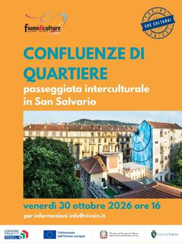
fri30octDance and movementConfluenze di quartiere: a walk in San SalvarioFriday 30 October, 16:00San Salvario (TO) · Freewith Fiumi di Culture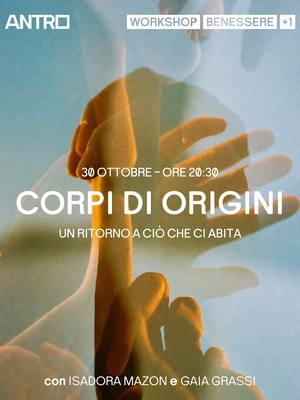
fri30octDance and movementCorpi di origini: meditation, art and movementFriday 30 October, 20:30San Salvario (TO) · 7 €with Antro with Isadora Mazon e Gaia Grassi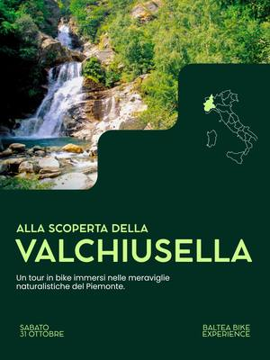
sat31octDance and movementBike tour: the Valchiusella valleySaturday 31 OctoberValchiusella (TO)with Baltea Bike Experience sat31octDance and movementDragon boat on the Po: Halloween specialSaturday 31 October, 20:30–22:00Centro (TO) · from 29 € · sold outwith Somewhere Tours with Circolo Amici del Fiume
sat31octDance and movementDragon boat on the Po: Halloween specialSaturday 31 October, 20:30–22:00Centro (TO) · from 29 € · sold outwith Somewhere Tours with Circolo Amici del Fiume- from1novDance and movementDance therapy: free movement and rhythmfrom Sunday 1 November, 10:00San Salvario (TO)with San Salvario ASD at Casa del Quartiere di San Salvario
- fri6novDance and movementMilonga Gricel: tango lesson and dance nightFriday 6 November, 21:00–01:00Parella (TO) · 15 €with Proyecto Gricel
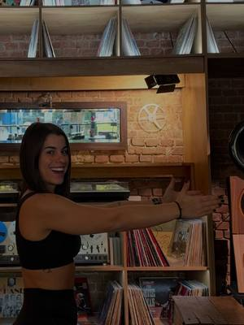
sat7novDance and movementPilates & Vinyl: a class and breakfastSaturday 7 November, 10:00–12:30Aurora (TO)with Alessia Calora at Tono- sat7novDance and movementCultural walk: Villaggio LeumannSaturday 7 November, 10:00–13:00Collegno (TO)with Solo Cose Belle
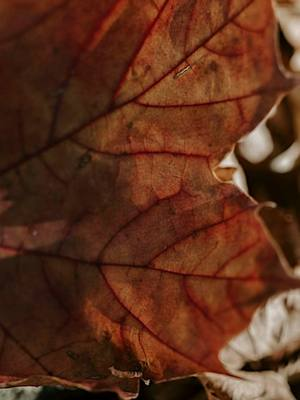
sat7novDance and movementCerretto Langhe trek: pollinatorsSaturday 7 November, 14:30–16:30Cerretto Langhe (CN) · Freewith Turismo in Langa with Langa Silvatica- sat7novDance and movementGarba workshop: a circle danceSaturday 7 November, 15:00–16:30Centro (TO) · 25 €with Ruthvi Deev
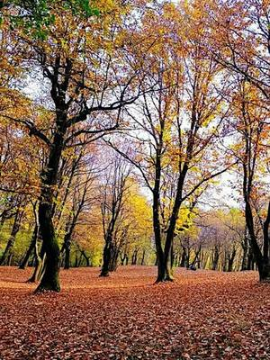
sun8novDance and movementFocus on foliage: photos in Val VaraitaSunday 8 November, 09:00–16:00Sampeyre (CN) · Free · sold outwith Parco del Monviso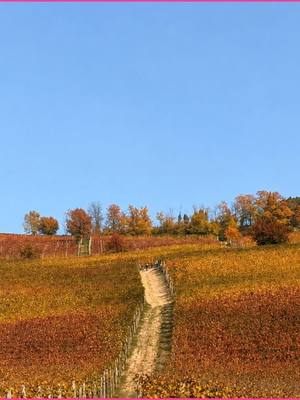
sat14novDance and movementLanghe trek: autumn foliage among the vinesSaturday 14 November, 09:00Monforte d’Alba (CN) · 249 €with Hiking Taste Tour sun15novDance and movementBike ride: to the Bosco del MerlinoSunday 15 November, 09:00–16:00Racconigi (CN) · Freewith Parco del Monviso
sun15novDance and movementBike ride: to the Bosco del MerlinoSunday 15 November, 09:00–16:00Racconigi (CN) · Freewith Parco del Monviso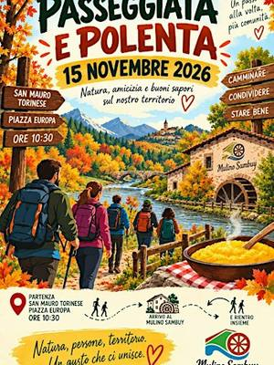
sun15novDance and movementHill walk: ending with polenta at the millSunday 15 November, 10:30–16:00San Mauro Torinese (TO) · from 22 €with Mulino Sambuy OdV- from21novDance and movementBaladi and folklore: Egyptian dance intensivefrom Saturday 21 November to Sunday 22 November, 10:00–16:00Parella (TO) · 240 €with Simona Evoli with Nada Al Basha
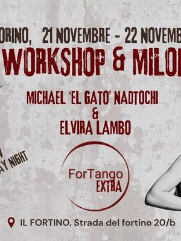
sat21novDance and movementFortango Extra: tango workshopsSaturday 21 November, 15:00–20:00Aurora (TO)with Fortango with Michael «El Gato» Nadtochi ed Elvira Lambo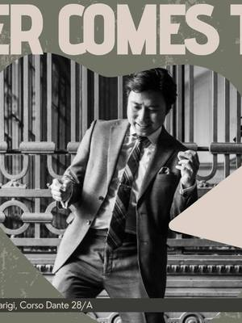
sat21novDance and movementBlues dance: workshop with Dexter SantosSaturday 21 November, 15:30–18:30San Salvario (TO) · 60 €with Slow Town Blues with Dexter Santos- from5decDance and movementSnow Latin Week: salsa and bachatafrom Saturday 5 December to Tuesday 8 December, 12:00–17:00Bardonecchia (TO) · from 299 €with Like This Agency
- from22janDance and movementGricel Tango Weekend: seminar with Chichofrom Friday 22 January to Sunday 24 January, 20:00San Donato (TO) · 200 €with Proyecto Gricel with Chicho Frumboli e Juana Sepúlveda
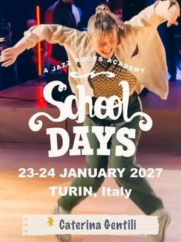
sat23janDance and movementSchool Days: swing and musicality workshopSaturday 23 JanuaryTurinwith Dusty Jazz- dateto be confirmedOtherCascina Roccafranca: this season’s coursesDate to be confirmedMirafiori (TO)with Cascina Roccafranca
- dateof your choiceDance and movementProgetto SLIP: circus and aerial coursesDate of your choiceBarriera di Milano (TO) · from 190 € per yearwith Progetto SLIP
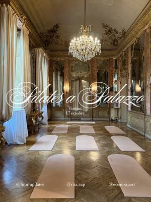
dateto be confirmedDance and movementPilates a Palazzo: class and breakfastDate to be confirmedTurinwith Rita Capparelli with Futura Pilates- dateof your choiceMusic and theatreSPLIT Teatro: acting, musicals and singingDate of your choiceMirafiori (TO)with SPLIT Teatro
- dateof your choiceDance and movementStudio21: street dance classesDate of your choiceLingotto (TO)with Studio21 Street Dance School
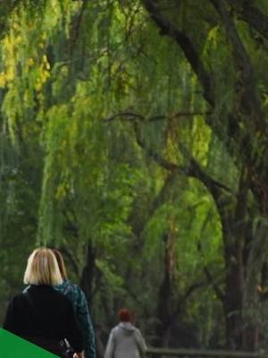
everyfriDance and movementWalking group: walks for over-65sEvery Friday, 09:30–11:00Mirafiori (TO) · 5 € for 4 sessionswith UISP Torino at Casa nel Parco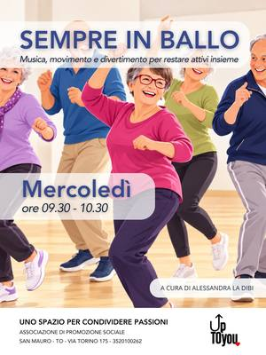
everywedDance and movementKeep on dancing: music and simple stepsEvery Wednesday, 09:30–10:30San Mauro Torinese (TO)with Alessandra La Dibi at upTOyou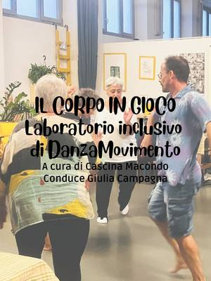
everymonDance and movementThe body at play: inclusive dance movementEvery Monday, 18:30–20:00Barriera di Milano (TO)with Cascina Macondo at Bagni Pubblici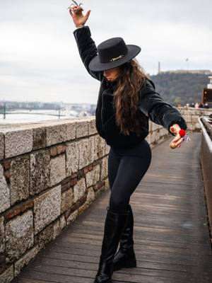
everythuDance and movementRitual dances: pizzica and tarantellaEvery Thursday, 18:30–20:30Barriera di Milano (TO) · 75 € per monthwith Valentina Padovan at Bunker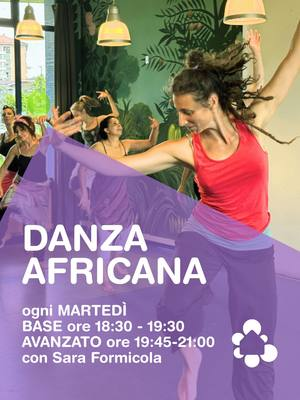
everytueDance and movementAfrican dance course: beginnersEvery Tuesday, 18:30–19:30Mirafiori (TO) · 40 € per monthwith Sara Formicola at Casa nel Parco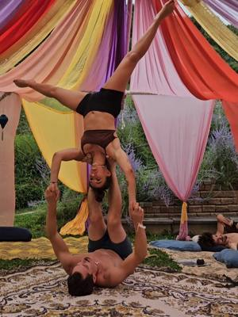
everymonDance and movementAcroyoga course: balancing in pairsEvery Monday, 19:00–20:30Barriera di Milano (TO) · 15 € per lessonwith Bunker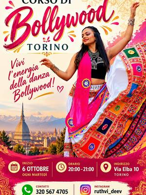
everytueDance and movementBollywood course: Indian danceEvery Tuesday, 20:00Lingotto (TO) · 15 € per lessonwith Ruthvi Deev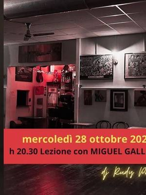
everywedDance and movementTango at Neruda: lesson and milongaEvery Wednesday, 20:30Borgo Vittoria (TO) · 12 €with Cafè Neruda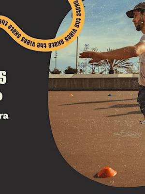
everywedDance and movementSurfskate: lessons at Parco DoraEvery Wednesday, 20:30Parco Dora (TO) · 20 € per lessonwith Surf In Town Community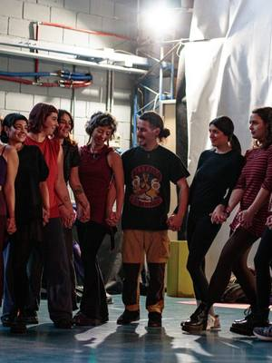
everywedDance and movementDabka course: a dance from the LevantEvery Wednesday, 21:00–22:00Barriera di Milano (TO) · 50 € per monthwith Layall Chamass at Bunker- everymonDance and movementDanza la tua essenza: free movementEvery Monday, 21:00–22:00San Mauro Torinese (TO)with upTOyou